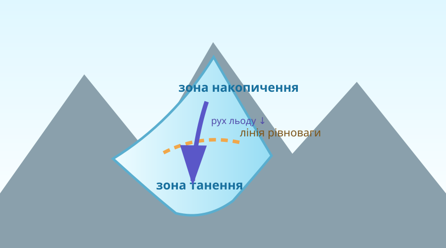
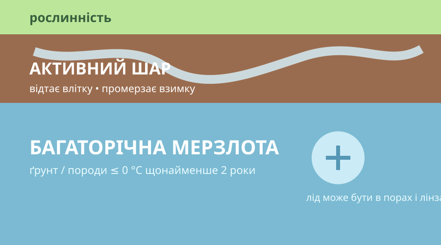

Багаторічна маса льоду на суходолі, яка утворилась зі снігу й рухається під дією власної ваги.
01
Знайдіть помилку
Перед вами чотири твердження. Позначте те, яке не можна вважати правильним без уточнення.
Оберіть твердження й аргументуйте подумки.
Лабораторія льодовика: коли сніг стає «річкою льоду»?
Баланс маси
Змініть накопичення снігу й танення. Модель показує, чи льодовик росте, стабільний або втрачає масу.
Баланс +15льодовик має тенденцію накопичувати масу
Модель спрощена: у природі баланс залежить від температури, опадів, висоти, сезону, океану та рельєфу.

Чому навіть «твердий» лід може рухатися вниз схилом?
Карта кріосфери: знайдіть географічну закономірність
Широта: висока
Висота: різна
Очікування: льодовиковий щит + мерзлота
Сформулюйте закономірність: чому льодовики трапляються не лише біля полюсів?
Мерзлота ≠ просто холодна земля

Арктичний ландшафт над мерзлотою • NASA/JPL-Caltech
Симулятор активного шару
активний шар відтає приблизно на 0,8 м

Умова: ґрунт промерз узимку, але повністю відтанув наступного літа.
Супутники бачать зміни, яких не видно за один урок


Доказове завдання
Чому фраза «льодовики завжди були мінливими, отже сучасний відступ нічого не доводить» є слабким аргументом?
Як тане льодовик?
Після перегляду
Назвіть два різні механізми, через які льодовик може втрачати лід: танення і відколювання (кальвінг). Чому для морських льодовиків важлива температура океанічної води?
Зробіть пам’ятку з безпечної поведінки
Завдання: не переписуйте чернетку дослівно. Перевірте її за правилами місцевих служб цивільного захисту та адаптуйте до конкретної ситуації.
Тепер упорядкуємо поняття
Лід, обмежений гірським рельєфом; рухається долинами вниз.
Величезна маса льоду, що вкриває великі площі суходолу й не підпорядковується формі окремої долини.
Ґрунт або гірські породи з температурою ≤ 0 °C щонайменше два роки поспіль. Це не обов’язково суцільний лід.
Верхній шар над мерзлотою, який сезонно відтає і знову промерзає.
Усі частини системи Землі, де вода перебуває у твердому стані: сніг, льодовики, морський лід, мерзлий ґрунт тощо.
Висновок як наукове твердження
Питання: Чи достатньо одного дуже теплого літа, щоб назвати відталий ґрунт «зниклою багаторічною мерзлотою»?
§45 + мініпродукт
1. Опрацюйте §45
Електронний підручник: Запотоцький С. П. та ін., «Географія», 6 клас (2023).
Відкрити електронний підручник ↗2. Завершіть пам’ятку
Оберіть одну небезпечну ситуацію з проєктного блоку, зробіть 1 сторінку: небезпека → 4 правила → що робити після події → джерело.